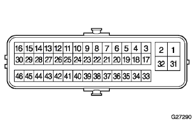

reference)
reference)ABS & TRC & VSC & BA System ECU terminal array with EBD |
|  |
reference)| Terminal number | Terminal symbol | Terminal name |
|---|---|---|
| 1 | GND2 | Actuator pump motor GND |
| 2 | Bm | Motor relay input |
| 3 | FR+ | Right -front car speed sensor input input |
| 4 | FL- | Left front car speed sensor input |
| 5 | RR+ | Right rear wheel speed sensor plus input |
| 6 | RL- | Left back wheel speed sensation input |
| 8 | TRC+ | TRC communication plus output |
| 9 | ENG+ | EFI communication plus input |
| 10 | NEO | Engine rotation signal input |
| 11 | Canh | Can communication input output |
| 12 | SP1 | Car speed signal output for meter |
| 13 | D/G | Diag communication output |
| 14 | MRF | Abscut relay output |
| 15 | MR | Absmtr relay output |
| 17 | FR- | Right front car speed sensor input |
| 18 | FL+ | Left front car speed sensor plus input |
| 19 | RR- | Right back velocity wheel speed sensor input |
| 20 | RL+ | Left back wheel speed sensorplus input |
| twenty two | TRC- | TRC communication negative output |
| twenty three | ENG- | EFI communication negative input |
| twenty four | TS | Test mode input |
| twenty five | Canl | Can communication input output |
| 27 | STP | Stop lamp switch input |
| 28 | PKB | Parking brake switch input |
| 29 | Wa | ABS Warning Lamp Output |
| 30 | BZ | VSC buzzer output |
| 31 | +Bs | Power supply for solenoids |
| 32 | GND1 | Skid control computer GND |
| 34 | Ind | Slip indicator lamp output |
| 35 | Wt | TRC/OFF indicator lamp output |
| 36 | Vscw | VSC Warning Lamp Output |
| 40 | P | Shift P range input |
| 42 | WFSE | Diag activation output |
| 43 | CSW | TRC cut switch input |
| 44 | BRL | Brake Warnin Grand Put output |
| 45 | R+ | Motor relay power supply |
| 46 | IG1 | IG power supply (ECU power supply) input |
Use a Toyota Electrical Tester to inspect the voltage and conduction between the wire harness side connector side of the brake actuator or between the terminals and each terminal.
| Terminal number | Terminal symbol | Input and output | Measurement item | Measurement conditions | Reference value |
|---|---|---|---|---|---|
| 1 | GND2 (Actuator pump motor GND) ← → Body Earth | input | Conduction | Always | There is an conductor |
| 27 | STP (stop lamp switch input) ← → GND | input | Voltage | IG switch ON, Brake pedal step in → open | 8-14V → 3V or less |
| 29 | WA (ABS Warnin Gramp Output) ← → GND | output | Voltage | ABS Warnin Grand Pup is on | 5-14V |
| 30 | BZ (VSC control buzzer output) ← → GND | output | Voltage | IG switch ON | 6-10V |
| 31 | +BS (power supply for solenoid drive) ← → GND | input | Voltage | Always | 10-14V |
| 32 | GND1 (ECU GND) ← → Body Earth | input | Conduction | Always | There is an conductor |
| 34 | IND (Slip Indeal Ramp Output) ← → GND | input | Voltage | IG switch ON | 10-14V |
| 35 | WT (TRC OFF Injike Rampo Output) ← → GND | output | Voltage | IG switch ON | 10-14V |
| 36 | VSCW (VSC Warnin Gramp Output) ← → GND | output | Voltage | IG switch ON | 10-14V |
| 40 | P (P range input) ← → GND | input | Voltage | Shift Slever P range other than P range → P range | 1V or less → 8-14V |
| 43 | CSW (TRC cut switch input) ← → GND | output | Conduction | IG Switch ON, Press the TRC OFF switch to hold it → Do not press | There is no conduction |
| 44 | BRL (Brake Warnin Gramp Output ← → GND) | output | Voltage | Brake warnin Gramp is on lighting | 5-14V |
| 46 | IG1 (IG1 power supply) ← → GND | input | Voltage | IG switch ON | 10-14V |